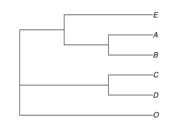
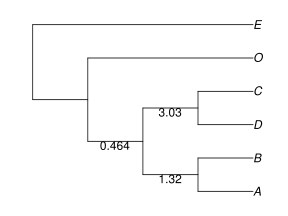

Input for SNaQ
SNaQ is a method implemented in the package to estimate a phylogenetic network from multiple molecular sequence alignments. There are two alternatives for the input data:
- A list of estimated gene trees for each locus, which can be obtained using MrBayes or RAxML. Or:
- A table of concordance factors (CF), i.e. gene tree frequencies, for each 4-taxon subset. This table can be obtained from BUCKy, to account for gene tree uncertainty
This pipeline can be used to obtain the table of quartet CF needed as input for SNaQ (see also the wiki.) It starts from the sequence alignments, runs MrBayes and then BUCKy (both parallelized), producing the table of estimated CFs and their credibility intervals. Additional details on this TICR pipeline describe how to insert data at various stages (e.g. after running MrBayes on each locus).
Tutorial data: gene trees
We suggest that you create a special directory for running these examples, where input files can be downloaded and where output files will be created (with estimated networks for instance). Enter this directory and run Julia from there.
Suppose you have a file with a list of gene trees in parenthetical format called raxmltrees.tre. You can access the example file of input trees here or here for easier download.
Do not copy-paste into a "smart" text-editor. Instead, save the file directly into your working directory using "save link as" or "download linked file as". This file contains 30 gene trees, each in parenthetical format on 6 taxa like this (with rounded branch lengths):
(E:0.038,((A:0.014,B:0.010):0.010,(C:0.008,D:0.002):0.010):0.025,O:0.078);
If raxmltrees.tre is in your working directory, you can view its content within Julia:
less("raxmltrees.tre")
or like this, to view the version downloaded with the package:
raxmltrees = joinpath(Pkg.dir("PhyloNetworks"),"examples","raxmltrees.tre") less(raxmltrees)
Just type q to quit viewing this file. You could read in these 30 trees and visualize the third one (say) like this:
using PhyloNetworks raxmltrees = joinpath(Pkg.dir("PhyloNetworks"),"examples","raxmltrees.tre");
julia> genetrees = readMultiTopology(raxmltrees); julia> genetrees[3] PhyloNetworks.HybridNetwork, Rooted Network 9 edges 10 nodes: 6 tips, 0 hybrid nodes, 4 internal tree nodes. tip labels: E, A, B, C, ... ((E:0.015,(A:0.006,B:0.006):0.003):0.041,(C:0.006,D:0.0):0.041,O:0.052);
To visualize any of these input trees, use the PhyloPlots package:
using PhyloPlots plot(genetrees[3], :R); # tree for 3rd gene

To read in all gene trees and directly summarize them by a list of quartet CFs (proportion of input trees with a given quartet):
julia> raxmlCF = readTrees2CF(raxmltrees, CFfile="tableCF.txt"); will use all quartets on 6 taxa calculating obsCF from 30 gene trees and for 15 quartets Reading in quartets... 0+---------------+100% *************** table of obsCF printed to file tableCF.txt descriptive stat of input data printed to file summaryTreesQuartets.txt julia> PhyloNetworks.writeObsCF(raxmlCF) # observed CFs: gene frequencies 15×8 DataFrames.DataFrame │ Row │ t1 │ t2 │ t3 │ t4 │ CF12_34 │ CF13_24 │ CF14_23 │ ngenes │ ├─────┼────┼────┼────┼────┼──────────┼───────────┼───────────┼────────┤ │ 1 │ A │ B │ C │ D │ 1.0 │ 0.0 │ 0.0 │ 30 │ │ 2 │ A │ B │ C │ E │ 0.833333 │ 0.0333333 │ 0.133333 │ 30 │ │ 3 │ A │ B │ C │ O │ 0.866667 │ 0.0 │ 0.133333 │ 30 │ │ 4 │ A │ B │ D │ E │ 0.833333 │ 0.0333333 │ 0.133333 │ 30 │ │ 5 │ A │ B │ D │ O │ 0.866667 │ 0.0 │ 0.133333 │ 30 │ │ 6 │ A │ B │ E │ O │ 0.833333 │ 0.0666667 │ 0.1 │ 30 │ │ 7 │ A │ C │ D │ E │ 0.0 │ 0.0 │ 1.0 │ 30 │ │ 8 │ A │ C │ D │ O │ 0.0 │ 0.0 │ 1.0 │ 30 │ │ 9 │ A │ C │ E │ O │ 0.533333 │ 0.333333 │ 0.133333 │ 30 │ │ 10 │ A │ D │ E │ O │ 0.533333 │ 0.333333 │ 0.133333 │ 30 │ │ 11 │ B │ C │ D │ E │ 0.0 │ 0.0 │ 1.0 │ 30 │ │ 12 │ B │ C │ D │ O │ 0.0 │ 0.0 │ 1.0 │ 30 │ │ 13 │ B │ C │ E │ O │ 0.666667 │ 0.266667 │ 0.0666667 │ 30 │ │ 14 │ B │ D │ E │ O │ 0.666667 │ 0.266667 │ 0.0666667 │ 30 │ │ 15 │ C │ D │ E │ O │ 1.0 │ 0.0 │ 0.0 │ 30 │
less("tableCF.txt") lets you see the content of the newly created file "tableCF.txt", within Julia. Again, type q to quit viewing this file.
In this table, each 4-taxon set is listed in one row. The 3 "CF" columns gives the proportion of genes that has each of the 3 possible trees on these 4 taxa.
For more help on any function, type ? to enter the help mode, then type the name of the function. For example: type ? then readTrees2CF for information on the various options of that function.
When there are many more taxa, the number of quartets might be very large and we might want to use a subset to speed things up. Here, if we wanted to use a random sample of 10 quartets instead of all quartets, we could do:
readTrees2CF(raxmltrees, whichQ="rand", numQ=10, CFfile="tableCF10.txt")
Be careful to use a numQ value smaller than the total number of possible 4-taxon subsets, which is n choose 4 on n taxa (e.g. 15 on 6 taxa). To get a predictable random sample, you may set the seed with srand(12321) (for instance) prior to sampling the quartets as above.
Tutorial data: quartet CFs
If we already have a table of quartet concordance factor (CF) values in a file buckyCF.csv in this format
| Taxon1 | Taxon2 | Taxon3 | Taxon4 | CF12_34 | CF13_24 | CF14_23 |
|---|---|---|---|---|---|---|
| D | A | E | O | 0.565 | 0.0903 | 0.3447 |
| ... | ... |
we would read it in one step like this: readTableCF("buckyCF.csv"). An example file comes with the package, available here or here.
julia> buckyCFfile = joinpath(Pkg.dir("PhyloNetworks"),"examples","buckyCF.csv");
julia> buckyCF = readTableCF(buckyCFfile)
30 gene trees per 4-taxon set
Object DataCF
number of quartets: 15
The same thing could be done in 2 steps: first to read the file and convert it to a 'DataFrame' object, and then to convert this DataFrame into a DataCF object.
julia> using CSV, DataFrames julia> dat = CSV.read(buckyCFfile); julia> head(dat) # head shows the first 6 rows only 6×14 DataFrames.DataFrame. Omitted printing of 8 columns │ Row │ taxon1 │ taxon2 │ taxon3 │ taxon4 │ CF12.34 │ CF12.34_lo │ ├─────┼────────┼────────┼────────┼────────┼────────────┼────────────┤ │ 1 │ D │ A │ E │ O │ 0.565033 │ 0.5 │ │ 2 │ D │ A │ E │ B │ 0.0005 │ 0.0 │ │ 3 │ C │ A │ E │ B │ 0.0005 │ 0.0 │ │ 4 │ C │ A │ E │ O │ 0.565033 │ 0.5 │ │ 5 │ D │ A │ O │ B │ 3.33333e-5 │ 0.0 │ │ 6 │ C │ D │ E │ O │ 0.999867 │ 1.0 │ julia> buckyCF = readTableCF(dat) 30 gene trees per 4-taxon set Object DataCF number of quartets: 15 julia> PhyloNetworks.writeObsCF(buckyCF) 15×8 DataFrames.DataFrame │ Row │ t1 │ t2 │ t3 │ t4 │ CF12_34 │ CF13_24 │ CF14_23 │ ngenes │ ├─────┼────┼────┼────┼────┼────────────┼────────────┼────────────┼────────┤ │ 1 │ D │ A │ E │ O │ 0.565033 │ 0.0903 │ 0.344667 │ 30 │ │ 2 │ D │ A │ E │ B │ 0.0005 │ 0.8599 │ 0.139567 │ 30 │ │ 3 │ C │ A │ E │ B │ 0.0005 │ 0.8599 │ 0.139567 │ 30 │ │ 4 │ C │ A │ E │ O │ 0.565033 │ 0.0903 │ 0.344667 │ 30 │ │ 5 │ D │ A │ O │ B │ 3.33333e-5 │ 0.8885 │ 0.111467 │ 30 │ │ 6 │ C │ D │ E │ O │ 0.999867 │ 6.66667e-5 │ 6.66667e-5 │ 30 │ │ 7 │ C │ E │ O │ B │ 0.0401667 │ 0.263067 │ 0.696767 │ 30 │ │ 8 │ C │ D │ A │ E │ 1.0 │ 0.0 │ 0.0 │ 30 │ │ 9 │ C │ D │ O │ B │ 0.999867 │ 6.66667e-5 │ 6.66667e-5 │ 30 │ │ 10 │ C │ D │ E │ B │ 1.0 │ 0.0 │ 0.0 │ 30 │ │ 11 │ D │ E │ O │ B │ 0.0401667 │ 0.263067 │ 0.696767 │ 30 │ │ 12 │ C │ D │ A │ O │ 0.999867 │ 6.66667e-5 │ 6.66667e-5 │ 30 │ │ 13 │ C │ D │ A │ B │ 1.0 │ 0.0 │ 0.0 │ 30 │ │ 14 │ A │ E │ O │ B │ 0.0731667 │ 0.0424667 │ 0.884367 │ 30 │ │ 15 │ C │ A │ O │ B │ 3.33333e-5 │ 0.8885 │ 0.111467 │ 30 │
In the input file, columns need to be in the right order: with the first 4 columns giving the names of the taxa in each 4-taxon set. The CF values are assumed to be in columns named "CF12_34", etc., or else in columns 5,6,7. If available, a column named "ngenes" will be taken to have the the number of genes for each 4-taxon subset.
Tutorial data: starting tree
If we have a tree for the data set at hand, it can be used as a starting point for the optimization. From our gene trees, we estimated a species tree with ASTRAL. This tree comes with the package in file astral.tre here. This file has 102 trees: 100 bootstrap species trees, followed by their greedy consensus, followed by the best tree on the original data. It's this last tree that we are most interested in. We can read it with
astralfile = joinpath(Pkg.dir("PhyloNetworks"),"examples","astral.tre"); astraltree = readMultiTopology(astralfile)[102] # 102th tree: last tree here plot(astraltree, :R, showEdgeLength=true);

To start its search, SNaQ will need a network of "level 1". All trees and all networks with 1 hybridization are of level 1. To make sure that a network with 2 or more hybridizations is of level 1, we can read it in with readTopologyLevel1 (which also unroots the tree, resolves polytomies, replaces missing branch lengths by 1 for starting values etc.):
T=readTopologyLevel1("startNetwork.txt")
(here startNetwork.txt is a hypothetical file: replace this by the name of a file that contains your network of interest.)
Next: Getting a Network